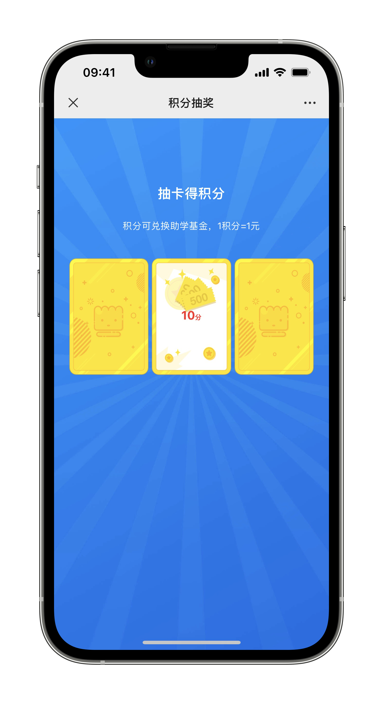
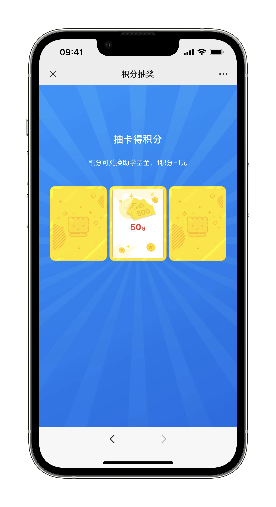
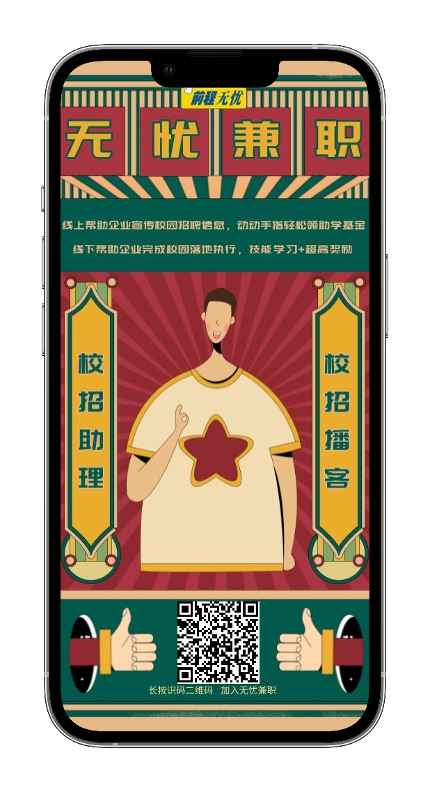

如题。
转发推送 ？
经常在朋友圈看到一些同学转发一些广告推送，本人也曾试着做过（给别人转过也招人转过），基本是每条5-8r，保存朋友圈24h结账。这种基本就是拿着截图去找发布任务的人结账。
或许是有人看这种模式也是一种获取流量的方式，尤其是对于一些在校的学生。
然后就将此方法做成了一个接发单的平台。
然后，这两天，我就浅浅的试了一下，觉得这个模式非常眼熟？
-
要做兼职的在平台接单
-
转发平台指定的推送链接，链接会统计经由接单者转发的点击数
1收益通过抽奖的形式进行结算，每个人的转发链接都是独一无二的，系统会对推送的浏览量进行计数。浏览量是指点进推送的人次，与点赞无关。 -
当浏览量达到3个会进行第一次抽奖，抽奖金额为2/5/10，三抽一；

抽奖界面-第一轮抽奖
-
1 2这也就是说，只需要三个浏览量就能参与抽奖，但金额💰不高。2-10r而已。平均来说基本就是其他传统微信接单的价格。 然后我发现，只需要将链接随便转到一个互助群就够了，没必要发朋友圈。 -
当任务结束后，系统计算浏览量最终排名，排名前10%会进行第二次抽奖，抽奖金额5/10/50，三抽一。即每条任务最低收益为2r(2+0)，最高收益为60r(10+50)。
1基本能有20-30个浏览量就能参与第二轮抽奖。

抽奖界面-第二轮抽奖
然后重点来了
除了这个所谓的平台接单与转发推送抽奖的套路。
这个平台还有拉人头收益翻倍的机制「万物基于传销？」，也像PDD拉人砍一刀。
每拉一个人，既会有相应的积分，然后当你所拉的这个人也完成转发的任务时，你也有相应的收益。「更像了？」
虽然这是普遍的拉新套路，还远没到「传销」的地步，但要做的同学还是要提高警惕。
注意各方面安全。

扫码查看详情
补充
这个是简单记录，当然你可以理解为在拉人头「比如扫上面的推荐码」，真实性没问题，但不排除后续有其他变化，如果看到此信息的同学发现有什么不对劲，请及时止损，本文作者不为上面平台做任何背书「我就是一个臭推广的来提高自己收益」